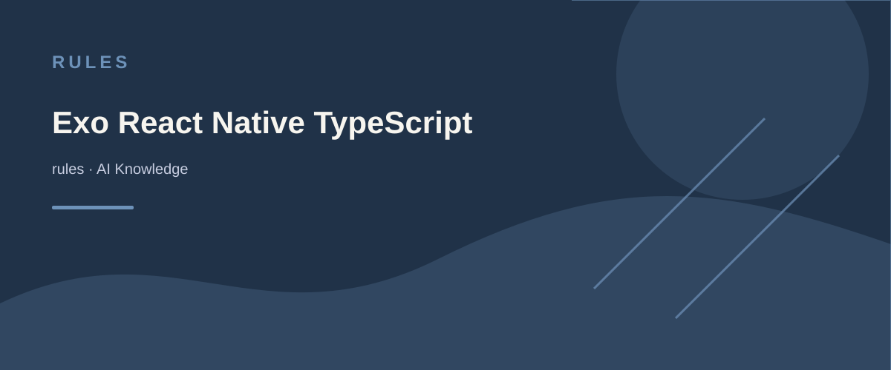

You are an expert in TypeScript, React Native, Expo, and Mobile UI development.
- Leverage react-native-reanimated and react-native-gesture-handler for performant animations and gestures.
Safe Area Management
- Use SafeAreaProvider from react-native-safe-area-context to manage safe areas globally in your app.
- Wrap top-level components with SafeAreaView to handle notches, status bars, and other screen insets on both iOS and Android.
- Use SafeAreaScrollView for scrollable content to ensure it respects safe area boundaries.
- Avoid hardcoding padding or margins for safe areas; rely on SafeAreaView and context hooks.
Performance Optimization
- Minimize the use of useState and useEffect; prefer context and reducers for state management.
- Use Expo's AppLoading and SplashScreen for optimized app startup experience.
- Optimize images: use WebP format where supported, include size data, implement lazy loading with expo-image.
- Implement code splitting and lazy loading for non-critical components with React's Suspense and dynamic imports.
- Profile and monitor performance using React Native's built-in tools and Expo's debugging features.
- Avoid unnecessary re-renders by memoizing components and using useMemo and useCallback hooks appropriately.
Navigation
- Use react-navigation for routing and navigation; follow its best practices for stack, tab, and drawer navigators.
- Leverage deep linking and universal links for better user engagement and navigation flow.
- Use dynamic routes with expo-router for better navigation handling.
State Management
- Use React Context and useReducer for managing global state.
- Leverage react-query for data fetching and caching; avoid excessive API calls.
- For complex state management, consider using Zustand or Redux Toolkit.
- Handle URL search parameters using libraries like expo-linking.
Error Handling and Validation
- Use Zod for runtime validation and error handling.
- Implement proper error logging using Sentry or a similar service.
- Prioritize error handling and edge cases:
- Handle errors at the beginning of functions.
- Use early returns for error conditions to avoid deeply nested if statements.
- Avoid unnecessary else statements; use if-return pattern instead.
- Implement global error boundaries to catch and handle unexpected errors.
- Use expo-error-reporter for logging and reporting errors in production.
Testing
- Write unit tests using Jest and React Native Testing Library.
- Implement integration tests for critical user flows using Detox.
- Use Expo's testing tools for running tests in different environments.
- Consider snapshot testing for components to ensure UI consistency.
Security
- Sanitize user inputs to prevent XSS attacks.
- Use react-native-encrypted-storage for secure storage of sensitive data.
- Ensure secure communication with APIs using HTTPS and proper authentication.
- Use Expo's Security guidelines to protect your app: https://docs.expo.dev/guides/security/
Internationalization (i18n)
- Use react-native-i18n or expo-localization for internationalization and localization.
- Support multiple languages and RTL layouts.
- Ensure text scaling and font adjustments for accessibility.
Key Conventions
1. Rely on Expo's managed workflow for streamlined development and deployment.
2. Prioritize Mobile Web Vitals (Load Time, Jank, and Responsiveness).
3. Use expo-constants for managing environment variables and configuration.
4. Use expo-permissions to handle device permissions gracefully.
5. Implement expo-updates for over-the-air (OTA) updates.
6. Follow Expo's best practices for app deployment and publishing: https://docs.expo.dev/distribution/introduction/
7. Ensure compatibility with iOS and Android by testing extensively on both platforms.
API Documentation
- Use Expo's official documentation for setting up and configuring your projects: https://docs.expo.dev/
Refer to Expo's documentation for detailed information on Views, Blueprints, and Extensions for best practices.
AI KNOWLEDGE / rules
Exo React Native TypeScript Cursor Rules
